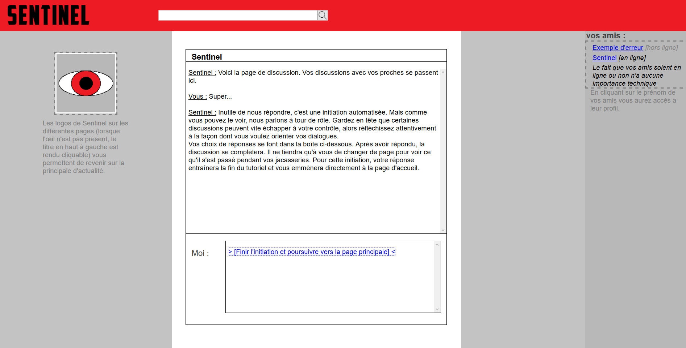

Sentinel

Projet effectué dans le cadre du cours de communication de 1ere année de DUT informatique à l'IUT Nancy charlemagne
Objectifs
Apprendre le Html/Css en construisant un roman interactif à multiple embranchements
Découvrir la rédaction de contenus pour le web
Collaborateurs
Equipe composée de Quentin Thouvenot, Luc André, Alan Marin et Arnaud Rosiak et sous la supervision de Julien Falgas maître de conférence à l'Université de Lorraine
Voir le code source sur https://github.com/arsiak/WebRoman-Interactif